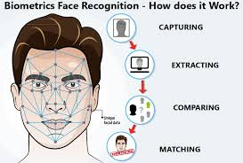

تعريف الذكاء الاصطناعي وشرح وجهات النظر المختلفة حول معنى الذكاء الاصطناعي
تحديد تطبيقات الذكاء الاصطناعي الواقعية في الحياة اليومية
فهم المفهوم الأساسي للعامل الذكي
التعرف على المعالم الرئيسية في تاريخ الذكاء الاصطناعي
تسمية المجالات الرئيسية لبحوث وتطبيقات الذكاء الاصطناعي
الجزء الأول: الذكاء الاصطناعي جزء من حياتك بالفعل
الرسالة الأساسية: أنت تستخدم بالفعل الذكاء الاصطناعي عدة مرات كل يوم، وغالبًا دون أن تدرك ذلك.
تأمل هذه الأنشطة اليومية:
استخدام نظام تحديد المواقع (GPS) أو تطبيق خرائط للملاحة
طرح سؤال على Siri أو Alexa أو مساعد Google
مشاهدة Netflix أو تصفح توصيات TikTok
استخدام تطبيقات الصور التي تتعرف تلقائيًا على الوجوه
كل هذه تطبيقات للذكاء الاصطناعي أصبحت مدمجة بسلاسة في حياتنا اليومية.
الملاحة بنظام تحديد المواقعالمساعدون الصوتيونتوصيات المحتوىروبوتات الدردشة بالذكاء الاصطناعي

التعرف على الوجوهتوليد الفن بالذكاء الاصطناعيالسيارات ذاتية القيادة
أمثلة على الذكاء الاصطناعي في العمل:
المساعدون الصوتيون يستجيبون للأسئلة
التعرف على الوجوه في الصور
تقنية السيارات المستقلة
توليد الفن بالذكاء الاصطناعي (Midjourney، DALL-E)
الجزء الثاني: تعريف الذكاء الاصطناعي
ما هو الذكاء؟
قبل أن نعرّف الاصطناعي، دعونا نفكر في ما يعنيه الذكاء:
القدرة على التعلم من التجربة
القدرة على حل المشكلات
القدرة على فهم الأفكار المعقدة
القدرة على التكيف مع المواقف الجديدة
القدرة على التفكير والتخطيط
الذكاء الاصطناعي يتعلق بإنشاء آلات (حواسيب، روبوتات، برمجيات) قادرة على القيام بهذه الأمور.
أربعة منظورات للذكاء الاصطناعي
هناك طرق مختلفة للتفكير في ما يجب أن يفعله الذكاء الاصطناعي:
أربعة منظورات للذكاء الاصطناعي
(إطار راسل ونورفيج)
التفكير
التصرف
بشري
عقلاني
التفكير بطريقة بشرية
علوم إدراكية
مثال: نمذجة كيفية تعرف الدماغ البشري على الوجوه، ثم جعل الذكاء الاصطناعي يفعل ذلك بنفس الطريقة
فهم الإدراك البشري
التفكير بطريقة عقلانية
المنطق والتفكير
مثال: نظام تشخيص طبي يستخدم قواعد منطقية: "إذا كانت هناك حمى وسعال فافحص الإنفلونزا"
قوانين الفكر
التصرف بطريقة بشرية
اختبار تورينج
مثال: روبوت دردشة يتحدث بشكل طبيعي لدرجة أنك لا تستطيع معرفة ما إذا كان إنسانًا أو آلة
التصرف مثل البشر
التصرف بطريقة عقلانية
العوامل العقلانية
مثال: ذكاء اصطناعي للشطرنج يلعب للفوز، يختار الحركات التي تزيد من فرص الفوز
★ تركيز الذكاء الاصطناعي الحديث ★
تحقيق الأهداف بفعالية
يركز النهج الحديث على بناء عوامل عقلانية تحقق أهدافها بفعالية
1. التصرف مثل البشر
صنع آلات تتصرف مثل البشر
مثال: روبوت دردشة يمكنه إجراء محادثة
مثال: روبوت يمكنه المشي والتحرك مثل الإنسان
اختبار تورينج: إذا كنت تتحدث مع شيء ما ولا تستطيع معرفة ما إذا كان إنسانًا أو آلة، فإنه ينجح في الاختبار
2. التفكير مثل البشر
صنع آلات تفكر بالطريقة التي يفكر بها البشر
فهم كيفية عمل الدماغ البشري
محاولة جعل الحواسيب تحل المشكلات بنفس الطريقة
مثال: نمذجة كيفية تعرف البشر على الوجوه، ثم جعل الذكاء الاصطناعي يفعل ذلك بنفس الطريقة
3. التفكير بطريقة عقلانية
صنع آلات تفكر منطقيًا وبشكل صحيح
استخدام المنطق الرسمي والقواعد
التأكد من سلامة التفكير
مثال: نظام تشخيص طبي يستخدم قواعد منطقية: "إذا كان المريض يعاني من حمى وسعال فافحص الإنفلونزا"
4. التصرف بطريقة عقلانية
صنع آلات تفعل الصواب لتحقيق أهدافها
هذا هو النهج الحديث الأكثر شيوعًا
ليس بالضرورة التفكير مثل البشر، فقط الحصول على نتائج جيدة
مثال: برنامج شطرنج يلعب للفوز، حتى لو لم يفكر مثل لاعب شطرنج بشري
تعريف بسيط لمقررنا
الذكاء الاصطناعي هو علم وهندسة صنع آلات قادرة على إدراك بيئتها، والتعلم من التجربة، واتخاذ إجراءات لتحقيق الأهداف.
الجزء الثالث: ماذا يمكن للذكاء الاصطناعي أن يفعل اليوم؟
أحدث ما توصلت إليه التقنية: التطبيقات الواقعية
1. اللغة والتواصل
ُّف على الكالم
المساعدون الصوتيون (Siri، Alexa، مساعد Google)
الترجمة في الوقت الفعلي (Google Translate)
التسميات التوضيحية التلقائية على مقاطع الفيديو
كيف يعمل (ببساطة): يتعلم الذكاء الاصطناعي أنماط الكلمات الصوتية من خلال الاستماع إلى آلاف الساعات من الكلام
توليد النص
ChatGPT وغيره من الذكاء الاصطناعي التحاوري
الردود التلقائية على البريد الإلكتروني
مساعدو كتابة المحتوى
كيف يعمل (ببساطة): يتعلم الذكاء الاصطناعي من مليارات الأمثلة النصية للتنبؤ بالكلمات التي يجب أن تأتي بعد ذلك
الترجمة
يمكن لـ Google Translate الترجمة بين أكثر من 100 لغة
ترجمة المحادثات في الوقت الفعلي في التطبيقات
التأثير: كسر حواجز اللغة في جميع أنحاء العالم
2. الرؤية والتعرف على الصور
التعرف على الوجوه
فتح قفل هاتفك باستخدام Face ID
وسم الأصدقاء تلقائيًا في الصور
أنظمة الأمان
ُّف على األشياء
التصوير الطبي: اكتشاف الأورام في الأشعة السينية والرنين المغناطيسي
مراقبة الجودة في التصنيع
أنظمة الدفع الذاتي التي تتعرف على المنتجات
توليد الصور
أدوات الفن بالذكاء الاصطناعي (DALL-E، Midjourney، Stable Diffusion)
إنشاء وجوه واقعية لأشخاص غير موجودين
مساعدة المصممين والفنانين على إنشاء المفاهيم بسرعة
3. الأنظمة المستقلة
السيارات ذاتية القيادة
تسلا أوتوبايلوت، سيارات أجرة Waymo
سيارات يمكنها إدراك الطريق والمركبات الأخرى والمشاة
اتخاذ القرارات: متى تكبح، تنعطف، تسرع
التحدي: لا تزال قيد التطوير - السلامة أمر بالغ الأهمية!
الطائرات بدون طيار
توصيل الطرود (Amazon Prime Air)
المراقبة الزراعية
عمليات البحث والإنقاذ
الروبوتات
روبوتات المستودعات (مراكز تنفيذ طلبات Amazon)
روبوتات التصنيع
روبوتات جراحية تساعد الأطباء
4. الألعاب والمنافسة
الإنجازات الرئيسية
1997: Deep Blue يهزم بطل العالم في الشطرنج جاري كاسباروف
2016: AlphaGo يهزم بطل العالم في لعبة Go لي سيدول
2019: الذكاء الاصطناعي يهزم اللاعبين المحترفين في Dota 2 (لعبة فيديو معقدة)
اليوم: يمكن للذكاء الاصطناعي لعب آلاف الألعاب بمستويات تفوق البشر
لماذا الألعاب مهمة: إنها أرضية اختبار جيدة للذكاء الاصطناعي لأنها تحتوي على قواعد وأهداف واضحة
5. أنظمة التوصيات
تواجهها يوميًا:
Netflix: "ماذا يجب أن أشاهد بعد ذلك؟"
Spotify: قائمة تشغيل "اكتشف أسبوعيًا"
Amazon: "العملاء الذين اشتروا هذا اشتروا أيضًا..."
TikTok/Instagram: خلاصتك المخصصة
YouTube: مقاطع الفيديو المقترحة
كيف تعمل (ببساطة): يتعلم الذكاء الاصطناعي ما تحبه بناءً على سلوكك السابق ويجد أنماطًا مع مستخدمين مماثلين
6. الرعاية الصحية والطب
التشخيص
يمكن للذكاء الاصطناعي اكتشاف السرطان في الصور الطبية بدقة عالية
التنبؤ بخطر الإصابة بالأمراض بناءً على بيانات المرضى
اكتشاف الأدوية: العثور على أدوية جديدة بشكل أسرع
مثال: اكتشف الذكاء الاصطناعي COVID-19 من الأشعة السينية للصدر خلال الجائحة
7. الأعمال والتمويل
التطبيقات
اكتشاف الاحتيال في معاملات بطاقات الائتمان
خوارزميات تداول الأسهم
روبوتات دردشة خدمة العملاء
التحليلات التنبؤية لقرارات الأعمال
8. Creative التطبيقات
تأليف الموسيقى
المساعدة في الكتابة
توليد الفن
سلوك شخصيات ألعاب الفيديو
المؤثرات الخاصة في الأفلام
ما لا يستطيع الذكاء الاصطناعي فعله بشكل جيد (حتى الآن)
من المهم فهم القيود:
التفكير بالحس العام حول المواقف اليومية
فهم السياق والفروق الدقيقة مثل البشر
التفكير الإبداعي الحقيقي (مقابل مطابقة الأنماط)
الذكاء العام (الذكاء الاصطناعي عادة ضيق - جيد في شيء واحد)
التفكير الأخلاقي والحكم الأخلاقي
فهم المشاعر بعمق
الجزء الرابع: كيف وصلنا إلى هنا؟ تاريخ موجز
History of Artificial Intelligence
المعالم الرئيسية 1950-2020s
الخمسينيات
ولادة الذكاء الاصطناعي
• اختبار تورينج (1950)
• صياغة مصطلح "الذكاء الاصطناعي" (1956)
• مؤتمر دارتموث
• التفاؤل المبكر
• برامج لعبة الداما
الستينيات-السبعينيات
التحديات الأولى
• تقدم محدود
• حواسيب
ضعيفة القدرة
• "شتاء الذكاء الاصطناعي" الأول
• تخفيض التمويل
الثمانينيات
الأنظمة الخبيرة
• تشخيص MYCIN
• قواعد IF-THEN
• اهتمام الأعمال
• شتاء الذكاء الاصطناعي الثاني
(أواخر الثمانينيات)
التسعينيات-الألفية الثانية
انطلاق تعلّم الآلة
• Deep Blue (1997)
• التعلم من البيانات
• مزيد من الحوسبة
• بيانات الإنترنت
• تطبيقات عملية
العقد الثاني من الألفية
ثورة التعلم العميق
• ImageNet (2012)
• AlphaGo (2016)
• السيارات ذاتية القيادة
• المساعدون الصوتيون
• الذكاء الاصطناعي يصبح سائدًا
العشرينيات
العصر الحالي
• GPT-3 (2020)
• ChatGPT (2022)
• أدوات الفن بالذكاء الاصطناعي
• مخاوف أخلاقية
• تقدم سريع
النمط: الحماس ← خيبة الأمل ← نهج جديد ← التقدم
علّم كل "شتاء" دروسًا أدت إلى الاختراق التالي
تقنية أفضل + المزيد من البيانات + طرق جديدة = النجاح
رسم تعليمي أصلي، CC BY 4.0
الخمسينيات: ولادة الذكاء الاصطناعي
1950: يسأل آلان تورينج "هل يمكن للآلات أن تفكر؟" - يقترح اختبار تورينج
1956: صياغة مصطلح "الذكاء الاصطناعي" في مؤتمر دارتموث
الحماس المبكر: اعتقد الباحثون أن الذكاء الاصطناعي بمستوى البشر كان على بعد 20 عامًا
الإنجازات المبكرة: برامج يمكنها لعب الداما وحل مسائل الجبر
الستينيات-السبعينيات: الحماس المبكر والتحديات الأولى
نجاح مع مشاكل محددة
لكن... جاء الواقع: كانت المشاكل أصعب مما كان متوقعًا
لم تكن الحواسيب قوية بما يكفي بعد
"شتاء الذكاء الاصطناعي" الأول (السبعينيات): انخفاض التمويل والاهتمام عندما لم يحقق الذكاء الاصطناعي وعوده
الثمانينيات: الأنظمة الخبيرة
ذكاء اصطناعي يلتقط معرفة الخبراء البشريين في مجالات محددة
مثال: MYCIN - شخّص الالتهابات البكتيرية
استخدم قواعد "IF-THEN"
بدأت الشركات بالاستثمار في الذكاء الاصطناعي مرة أخرى
لكن... شتاء ذكاء اصطناعي آخر في أواخر الثمانينيات عندما أصبحت الأنظمة صعبة الصيانة
التسعينيات-الألفية الثانية: انطلاق تعلّم الآلة
التحول من البرمجة اليدوية للقواعد إلى السماح للآلات بالتعلم من البيانات
1997: Deep Blue يهزم بطل الشطرنج
حواسيب أكثر قوة
الإنترنت يوفر كميات هائلة من البيانات
التركيز على التطبيقات العملية
العقد الثاني من الألفية: ثورة التعلم العميق
2012: اختراق التعلم العميق في التعرف على الصور
2016: AlphaGo يهزم بطل Go
انفجار في التطبيقات: المساعدون الصوتيون، السيارات المستقلة، إلخ.
يصبح الذكاء الاصطناعي سائدًا
العشرينيات: العصر الحالي
2020: GPT-3 يُظهر قدرات لغوية مذهلة
2022: إطلاق ChatGPT - يدخل الذكاء الاصطناعي الوعي العام
تصبح أدوات الفن بالذكاء الاصطناعي شائعة
مخاوف بشأن الأخلاقيات والتحيز والإزاحة الوظيفية
سباق لتطوير ذكاء اصطناعي أكثر قوة
النمط الرئيسي الذي يجب ملاحظته
مر الذكاء الاصطناعي بدورات:
الحماس ← بناء أشياء رائعة
خيبة الأمل ← أصعب مما كنا نعتقد
نهج جديد ← التعلم من الإخفاقات
التقدم ← تقنية أفضل + المزيد من البيانات + طرق جديدة
علّمنا كل "شتاء" دروسًا أدت إلى الاختراق التالي.
📖 هل تريد معرفة المزيد؟
للحصول على قصة أكثر تفصيلاً وجاذبية لرحلة الذكاء الاصطناعي من الحلم إلى الواقع، اقرأ مقالنا الشامل عن التاريخ:
الذكاء الاصطناعي/تعلّم الآلة أداة قوية ضمن علم البيانات، تُستخدم للتنبؤات والأتمتة والتعرف على الأنماط
مثال في الممارسة
عالم بيانات يعمل على تراجع العملاء (مغادرة العملاء للخدمة):
جمع البيانات: جمع بيانات العملاء باستخدام Pandas لتحميل وتنظيم المعلومات
الاستكشاف: تصور الأنماط باستخدام Matplotlib/Seaborn - من يغادر ومتى؟
النمذجة: بناء نموذج تعلّم آلة باستخدام Scikit-learn للتنبؤ بمن سيغادر (هذه هي خطوة الذكاء الاصطناعي/تعلّم الآلة!)
الرؤية: تحليل النتائج باستخدام Pandas - لماذا يغادرون؟ ما الأنماط الموجودة؟
الإجراء: عرض النتائج بالتصورات وتوصية باستراتيجيات الأعمال
النشر: أتمتة نظام التنبؤ بتراجع العملاء باستخدام نموذج تعلّم الآلة المدرّب
لاحظ كيف أن الذكاء الاصطناعي/تعلّم الآلة (الخطوة 3) هو جزء واحد فقط من عملية علم البيانات الكاملة، ولكنه جزء حاسم يجعل التنبؤات ممكنة.
🐍 هل أنت مستعد لبدء البرمجة؟
الآن بعد أن فهمت مفاهيم الذكاء الاصطناعي وعلم البيانات، لنتعلم المهارات البرمجية العملية التي ستحتاجها. سيعلمك درس أساسيات بايثون المفاهيم البرمجية الأساسية المستخدمة في علم البيانات والذكاء الاصطناعي:
المتغيرات وأنواع البيانات - تخزين والعمل مع أنواع مختلفة من البيانات
القوائم والقواميس ومصفوفات NumPy - تنظيم ومعالجة البيانات بكفاءة
التحكم في التدفق والحلقات - اتخاذ القرارات وتكرار العمليات
الدوال والفئات - كتابة كود منظم وقابل لإعادة الاستخدام